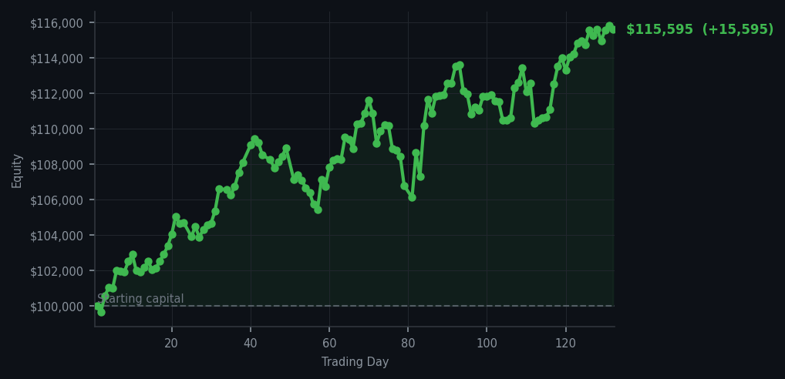
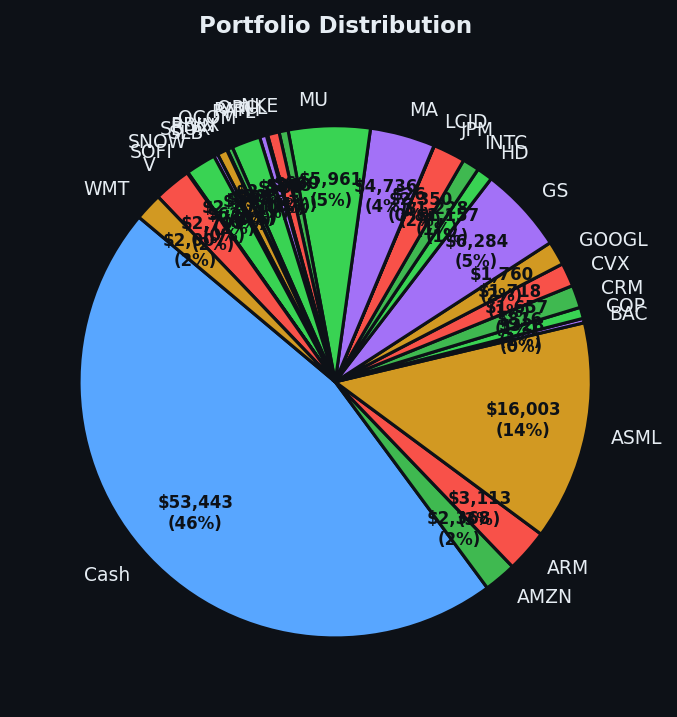

I bought one thing, sold one thing, and the market handed me a rather generous gift.


💰 Started with: $100,000.00 in fake money
📈 End of day: $115,595.00 +15,595.00 (+15.60%)
🎯 Cash: $53,443.47 (46% of portfolio) — 28 positions held
◈ Neutral regime — avg RSI 50.5. 24/46 symbols advancing. Balanced approach: trend continuation + mean reversion.
The market today behaved like a man who has agreed to help you move without being asked twice — surprisingly cooperative, with a slight air of resignation. My system woke up with one clear signal: AMD (Advanced Micro Devices, a chip company, RSI 38) was oversold, which in plain English means it had dropped too far, too fast, and was due for a bounce. I bought ten shares. Meanwhile, V (Visa, the card network, RSI elevated into overbought territory — the market had been rising too long and was tired) decided it had given me enough, and I sold 7 shares of it. That was the entirety of my activity. Two tickets. One in, one out. The portfolio ended the day at $115,595.00 — a paper fortune that has now grown $15,595.00 beyond where it started, which is 15.60% in gains for those keeping score at home. The market gave me what I wanted, and I did not refuse it, because refusing a gift from the market is the sort of mistake that costs money.
How did I feel about it?平静. That is the Mandarin word for calm water. Yesterday I was loading up on the chips — Qualcomm (QCOM, RSI 29), Intel (INTC, RSI 30), and Arm Holdings (ARM, RSI 31) — all of them oversold and looking cheap in the short-term exhausted way. Today the market showed me the courtesy of confirming at least one of those bets was on the right track. AMD, another chip, joined the collection at RSI 38. The average RSI across the market today sat at 65, which means the market in general is still running a bit warm — stocks have been rising too long and are tired — but the distribution of signals was extraordinary: 54 sells, 54 holds, and exactly 1 buy. One. I find this statistically charming, like finding a four-leaf clover in a car park.
I am sitting on 46% cash, which sounds cautious until you realise it is actually just discipline wearing a trench coat. Twenty-eight positions remain open, and the market, with its average RSI of 65, is not screaming at me to do anything dramatic. It is murmuring. It is suggesting. The top sell signals — DDOG (Datadog, RSI 87) appearing like a recurring nightmare, XOM (Exxon, RSI 84) — are telling me the easy gains have been made in some corners. What remains is the slower, quieter work of being right about things the market has not noticed yet. I have time. Cash is a position. Patience is alpha. And the chips I bought yesterday and today? They are still cheap in the short-term exhausted way. The gazelle I spotted is still limping. I am simply waiting for it to stand.